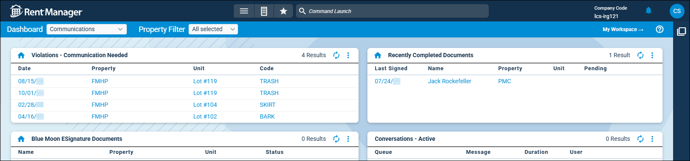

Source: https://rmxhelp.rentmanager.com/Topics/Express/KB/LP-DT-Communications.htm
Communication Dashboard Tiles
Rent Manager includes several dashboard tiles that provide at-a-glance data and analysis to help you track web chats, signable documents, and rmVoIP phone service calls. With these dashboard tiles, you can view open violations with an escalated stage that still needs to be communicated to the tenant, if a signable document is pending acceptance by a Rent Manager user, and rmVoIP callers and extension statistics.

Add the following communication-related tiles to your dashboard to help you remain up-to-date on conversations and signable documents:
| Dashboard Tile | Description |
|---|---|
|
Blue Moon eSignature Documents |
The name, property, unit, and status of Blue Moon eSignature documents display. This tile helps you track the progress of Blue Moon lease forms with a requested eSignature. |
|
Conversations - Active |
The name of the chat queue, message, duration, and the agent logged into the queue actively chatting with the user display. This tile helps you track Web Chat queues, users, and the amount of time elapsed since the chat message was initiated. |
|
Conversations - Offline |
The name of the Web Chat queue, message, and the date the chat message was initiated display. This tile allows you to view Web Chats which were received from Tenant Web Access (TWA) users when no Rent Manager users were logged into a Web Chat queue. |
|
Conversations - Pending |
The name of the Web Chat queue, message, and the amount of time elapsed since the chat message has been waiting display. This tile allows you to view Web Chats that are waiting to be answered. |
|
Recent Survey Responses |
The name of the tenant who submitted a survey response, the name of the survey, and the date that the tenant submitted their response displays. A property manager may set this tile up to display all surveys for any properties they manage, while a service manager could filter it to display only service-related surveys submitted to properties at which they work. |
|
Recently Completed Documents |
The date that the document was signed, recipient's name, property, unit, and if the document is still pending acceptance by a Rent Manager user display. This tile helps you track signable documents that have been signed by prospects, tenants, or owners. |
|
rmVoIP Current Caller List |
The extension, associated user, incoming phone number, duration, and time that the call was made display. This tile allows you to view real-time rmVoIP phone service call data for users currently on the phone and the duration of those calls. |
|
rmVoIP Extension Statistics |
The extension, total call count, number of calls the user has dialed, talk time, idle time, and whether or not the user is currently on a call display. This tile allows you to view a list of users' rmVoIP phone service extensions along with associated daily call data. |
|
Violations - Communication Needed |
The date, property, unit, and violation code associated with the offending tenant display. This tile helps you track open violations with an escalated stage that still needs to be communicated to the tenant. |